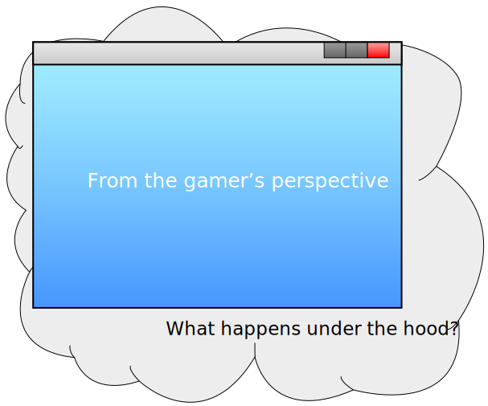
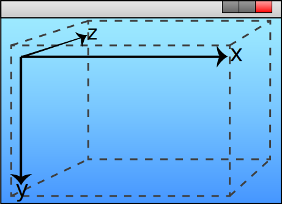
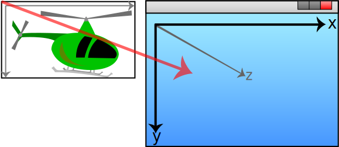
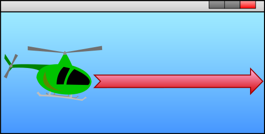
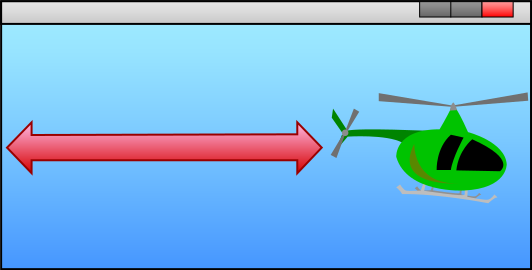
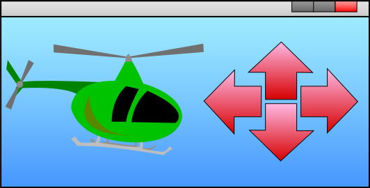
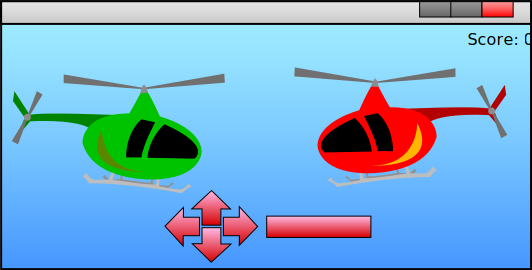
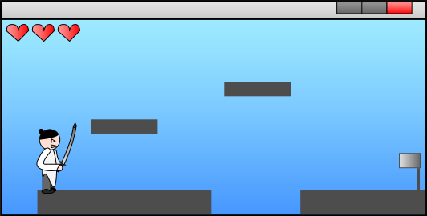

2013-10-02
This tutorial (with exercises in part 3) aims at teaching you how, this without using any specific technology and by only using abstract terms. Technology is indeed important and which you choose to develop your game programming skills is entirely up to you. However, it wont get you far unless you know how to think in order to create your desired functionality. The entire purpose of this tutorial is to teach you the mindset of a game programmer, and how one must think in order to utilize your technology/tools to achieve your own custom functionality.
I decided to write this tutorial due to my last year experience from lecturing Game Design students in «Game prototyping and testing» using «FlashDevelop» and «ActionScript 3» as development tools. I was surprised by the outcome of the lectures as it turned out the students' primary difficulties weren't related to the technology, but to the creation of functionality. They had problems understanding how they could use the tools to create their own functionality in their prototype games. So I wrote this tutorial as a part of my job at Westerdals Oslo ACT (previously The Norwegian School of IT (NITH)), primarily as a introduction for this year's students, but I was advised to make it public as well.
NB: the tutorial uses the «SVG» format for vector graphics and it is recommended that you upgrade your web browser, or switch to a more modern browser if you are unable to see the figures/images.
This first part is about abstract game programming, and by abstract, I mean a general understanding of core game programming concepts. Concepts that apply to any game, any technology, and any tool for game development - even the point-and-click "programming-free" tools. The goal is to provide you with the necessary knowledge in order to be able to create the functionality you want; from idea to a working solution. This requires a solid understanding of what game programming is all about, which is the first topic of this tutorial. It could be worth mentioning that it is recommended having some knowledge of object oriented programming to get the most out of this chapter, but I think everyone interested will gain good knowledge.
Before we move on, do some individual reflection on the two following questions:

There's no true correct answer to the first question, as it is primarily a matter of perception. Some might say "an audio-visual experience", while others might go more technical and state "an interactive user input based application, made for the purpose of entertainment". Frankly, it doesn't really matter, it was primarily a preparation and a contrast to the second question. I figure most people bothering to read this tutorial clearly have a common opinion on what a game actually is.
The second question might also give a vast variety of answers, but they'll all probably narrow down to the same key concepts;
These concepts probably define the very core of every game that exists, thus being abstract principles at a very high level. High level means that it's more of an overview, rather than being useful for game creation. The opposite is low level being at implementation details of games within various technologies. The provided concepts are actually at a so high level that we can delve deeper within each concept and still remain abstract, at least within computer games. The concepts provide a need for the following abstract components:
As you might have seen, no matter how these components work together, it's all about moving pixels on a screen.
"A beloved child has many names" is a famous Norwegian expression, or at least Scandinavian, and the Context is no exception. OpenGL, DirectX, and the HTML5-Canvas-object calls it «Context», Adobe Flash calls it «Stage», a typical Windows user would probably call it «Window», and I am sure that it goes by many other names as well. I've chosen to call it «Context» as it seems to be the most professional term. The first thing you should know is that the Context is not necessarily the graphical representation of a drawable area itself, but programmatically the interface, often an object in object oriented languages, that provides you functionality to draw to it. The last sentence was quite technical, so don't be afraid if you didn't get it at once - we are still at the abstract level. It could however be wise to get back to it in a later stage of your game programming journey, in case you still doubt its definition.
Common for the Context no matter what technology, is the Cartesian coordinate system and the possibility to draw on it. Most platforms these days support both two dimensional (2D) and three dimensional (3D) Contexts. For those of you that think 2D and 3D can't be compared; you are very wrong! The key difference is that 2D provides the X & the Y axis, while 3D provides the additional Z axis. The bigger difference is that the 3D based technologies often provides much more flexible and advanced APIs, but the programmatically concepts still remain the same. I have therefore chosen to focus on 2D in this tutorial and online book. It is also easier for beginners.
If you are unsure of what a coordinate system is and eventually how it works, I recommend reading Wikipedia's article before moving on. You won't necessarily have to read it all, but make sure you understand the key concepts.

So what does a coordinate system provide? Positioning! As we've already discussed, you want to draw something and the Context gives you a place to draw with a specified height and width. You can imagine it as a quite standard A4 paper, with the specified size of 21.0x29.7cm. Flip it over in "landscape mode" (laying; width is greatest) to be more representative for an actual screen. Now, you want to draw a 5cm line from the center of the paper against the right, so what do you have to do?
Excellent, now let's make it more like a game and specify the A4 paper's coordinate system. Firstly it's only 2D, secondly we need to specify the origin and the axis directions. Some technologies do this for you, while others like OpenGL allows you to do this on your own. We'll borrow Adobe Flash's coordinate system. The origin, the point where x & y both are 0, is defined at the very top-left corner of our A4 sheet. The X axis defines the horizontal direction and increases against the right. The Y axis defines the vertical direction and increases against the bottom of the sheet, which is typically the opposite of the traditional coordinate system used in high school mathematics. Note that you are not able to draw at the X coordinate 29.7cm, nor the Y coordinate 21cm. These two coordinates marks the very end at the paper and you will in that case draw outside of the paper.
With our coordinate system defined, we can now draw the line. Use the width and the height of the paper (Context) to calculate the center by dividing both on two. Result; x = 14.85, y = 10.5. Find this coordinate on the sheet and mark/place your pencil there, a ruler could be of excellent use. Calculate the endpoint coordinate, x + 5cm. Result; x = 19.85, y = 10.5. Good, now draw your line from the center to that coordinate. You might notice that your line doesn't get centered at the paper, but it starts at the center. So how do you actually center it? Easy! Divide the width of the line on two (5cm / 2cm = 2.5cm) and subtract it from the X coordinate of both the start- and endpoint.
Now, you can draw three more lines to create a rectangle and you will end up with your very first shape. This is as you probably have noticed, a quite complex procedure, but still helps you understand the key concepts of using the Context coordinate system. Luckily, most technologies give you pre-made functions for this. The following example is ActionScript 3 (Flash), and gives you the same result, but is working with pixels (px) instead of cm. Remember that the context is called «Stage» in Flash.
// Calculate the center of the stage
var centerX: int = stage.stageWidth / 2;
var centerY: int = stage.stageHeight / 2;
// Define the length/width of the line
var lineWidth: int = 5;
// Calculate the start position of the line
var lineStartX: int = centerX - (lineWidth / 2);
var lineStartY: int = centerY;
// Calculate the end position of the line
var lineEndX: int = centerX + lineWidth;
var lineEndY: int = lineStartY;
// Move the "pencil" to the start of the line
stage.graphics.moveTo(lineStartX, lineStartY);
// Draw the line
stage.graphics.lineTo(lineEndX, lineEndY);Do not be alarmed if you didn't get all of that. It was just a non-abstract example to bind the theory with a practical example.
As you have probably understood by now, drawing complex figures with code can be a big hassle and luckily, most technologies allow us to use proper easy-to use drawing tools and to import them into our programming projects as either bitmap images (jpg, png, bmp, etc.) or vector graphics (swf, svg, etc.). I will not present any examples or details on how to explicitly do that here, as it will take us away from the abstract approach. What you should now is that common for the technologies is the ability to either force or allow the programmer to group figures (drawable objects) in hierarchies. Why? Recall the complexity of managing one square or line, as in our previous example. Now imagine playing Grand Theft Auto V (GTA 5) and all the objects being visible at the same time. Now imagine that complexity in code! Working with all of them in one Context will give you messy, ugly, hard to work with, code! The solution is individual «object spaces», known as a «Canvas» in HTML5 and a "Sprite" in Flash.
So what exactly is an instance of an object space? It is more or less the exact same thing as the Context, except that it is not global addressable and that it doesn't appear on screen unless you tell it to. Lets get back to our A4 sheet of paper example. You have your Context (the paper), but you want to add a drawn helicopter. Grab a new sheet of paper, draw your helicopter on that sheet, and cut it out. This smaller piece of paper with a helicopter drawn on it represents now an object space. The origin is to the very left, and the proportions (width & height) is defined by the size of the drawing. But this alone does not make it visible on the screen (Context). Want it visible? Place the object space piece of paper at the middle of the Context paper - well done! This is exactly how it works in programming as well, except that you have to specify on which Context coordinates you want to place the object space helicopter. If it is at the center, it would typically be the half of the Context's size minus the half of the helicopter's size, in both the x and y axis.
There are more to this than just clean code. Imagine drawing the helicopter directly in the Context (screen). What if you wanted to move this 5px to the right? The helicopter might consist of several figures, and you would either have to move each and every figure or redraw the entire helicopter at its new position. The object space approach allows you to just change the helicopter object's coordinates in the context, and the technology will move the entire helicopter including all the figures it consists of! It is the same on paper, just move the smaller paper with the helicopter on it. Quite neat or what? Additionally you can also set up a hierarchy of objects. Let's say the chopper consisted of 6 shapes, each shape could have its own object space and all those object spaces could be placed in another object space, defining the helicopter itself. Then the helicopter space could be placed in the Context's space and you will have a three level hierarchy of objects. This allows for easy reuse of figures/objects, and is by some technologies also used to determine which objects that are to appear on top or below each other. This is a bit more complex to simulate on paper, as it is easier to copy a computer memory defined figure than a pencil drawing.
You should now clearly understand that this is beneficial, but are there any drawbacks? Yes, but fortunately not a big one. You need to perform «coordinate translation» when working with different object spaces. This is typically a problem when checking for collisions between two different object spaces. Imagine you have two equally sized helicopters on your piece of paper (Context). You want to check if they collide by using some simple math. Subtract helicopter B's coordinates from helicopter A's coordinates, and see if the resulting coordinate is smaller than the width (x) or height (y) of one of the helicopters. Don't worry if you didn't quite get the math, more on collision detection later. If it is, they are colliding. But what's the problem? If you don't pay much attention to what you are doing, you will end up working with the coordinates in the two individual helicopter's object spaces, which results in failure. You can prevent this by translating the two individual coordinate spaces into Context coordinate space. How? Just add each individual helicopter's position (coordinates) in Context space to the equation.
You know now how to work with graphics in game on an abstract level, but you don't know how to actually control and move (translate) the graphics to simulate the game functionality you want. This sections aims at teaching you how. It is actually what being a game programmer is all about. The problem is always the same; you have an idea, how do you realize it using your tool? There are always multiple solutions, some so advanced you have no idea where to start and here's where the abstract programming comes to the rescue. More on that soon, you'll first need to know where to implement the functionality.
First of all, what is a game loop? All game development technologies support the concepts of loops in one way or another. Loops are defined functionality that you want to be repeated, with either "infinite" or a defined number of iterations. So what are games? A loop of functionality that performs input/output, usually to allow user interaction and to draw graphics on screen. Games are dynamic as the user's actions affect the output. There is no way you will be able to get there without loops, hence the «Game loop", which is just a common name for the loop implementing gameplay mechanics. Game loops are typically "infinite" as they run until the user decides to quit the game or they reach the state of «game over». The following example is a relatively generic example of the simplest game loop, and actually also the simplest game engine. Do not try it in JavaScript or ActionScript as it will freeze your browser or Flash player.
// This could also be "while (true)"
while(1) {
// Game code here
}No matter what, every single game ever made has a game loop and this is where you implement your functionality. Even the simple point and click games where the loop itself is hidden to the developer. These are often event based games, and it is true that the developer will never see the actual implementation of the loop. But hold on, events might seem like magic but someone or something needs to maintain the event system. This includes storing events, like when the user clicks somewhere on the screen, and executing the so called event listeners ,which is the functionality that you have defined to be executed when a specific event occurs. And as you might have guessed; Maintaining the events requires a loop implemented by the technology you are using. Usually by the virtual machine like the Java runtime environment, the Adobe Flash Player, or a web browsers JavaScript engine. The following examples show the simplest game loop in JavaScript and ActionScript. Do not be alarmed if you don't get it right away.
/* JavaScript*/
// Create the game loop functionality
function gameLoop() {
// Game code here
};
// Fire of the game loop at 60 frames per second (1000ms / 60)
// This is in theory an event firing off at a given interval.
window.setInterval(gameLoop, 1000 / 60);/* ActionScript - frame rate is set in project settings */
// Create the game loop functionality
function gameLoop(e:Event):void {
// Game code here
}
// Fire of the game loop every frame
stage.addEventListener(Event.ENTER_FRAME, gameLoop);The word frame is a well known word within game development, but yet a bit vague. In general, it is used to represent an update and is often associated with benchmarking. This by measuring the maximum frame rate your device is capable of producing. Frame rates are typically measured in frames per second (FPS), which means number of updates per second. In terms of computer games, the frame rate is usually associated with the graphics and the Graphics processing unit (GPU). It describes how many images a game renders and draws to the screen per second. Most modern computer games have a graphical frame rate of 30-60 fps, which is sufficient to give a smooth experience as the average human eyes works at 25 fps.
From a developer's perspective, a frame is often used to describe one iteration (loop/round) in the game loop. FPS is in this case used to measure how efficient your game code is, and you want this to go as fast as possible! It is linked to the graphical fps as it is up to the game loop to perform the render call (often at the end), and a slow loop will thus limit the rendering fps. This is in modern games and engines avoided by utilizing individual threads for heavy and slow tasks, like AI, file operations, and networking. It is actually now normal to limit the game loop fps on the client side to 30-60 fps as there is no point of going any faster. It will just eat the CPU's processing power and won't make any difference to the user. Game servers are however still utilized at 100%, as they need to handle as many players as possible within the shortest amount of time.
I will from now on use the word frame in the context of the game loop, unless I specify that I am talking about graphics.
You now know the core mechanics behind game programming: A game loop ensuring user interaction and manipulating graphics, an how to work with graphics at an abstract level. Now comes the fun stuff! It is time to do some abstract programming, where you have to plan and think the solutions. Why is this useful? You can use abstract programming and brainstorming to figure out what needs to be done programmatically in order to achieve the specific functionality you're looking for in your games. It is a tool to use when you have a brilliant idea, but currently no clue on how to get there. Let's start with a simple exercise!
I recommend that you actually do these exercises rather then skipping right to the solutions. You won't become an independent abstract programmer nor solution finder if you don't practice! You can build on the A4 paper example used earlier as a tool to solve these exercises, as it gives a more visual feel. Also, imagine that we use the same coordinate system as Adobe Flash which was described earlier.
You are in this exercise supposed to use your newly required knowledge to figure out how to move this chopper out of the screen. Imagine that you already have a Context with a chopper loaded in a object space and that is placed on the screen - see the illustration below. Now, when this "game" is launched, the chopper should move against the right and eventually out of the screen. In this case, it is OK to address coordinates outside the window. Now how would you do it? Solution is below the image.

Solution:
Set up a game loop. The game loop should modify the chopper object's coordinates in the Context (translation) to move a little (for example 5px) to the right for every iteration (frame). Some technologies will require that you perform a redraw (render call) to update the screen, while others do this for you. How fast it will move will depend on the processor (CPU) which means that its speed will vary from machine to machine. This can easily be solved by moving it x * DeltaTime pixels to the right instead of a constant value. DeltaTime is the calculated elapsed time since last frame.
This exercise is a bit more difficult and builds on the previous solution. Now you want to change direction of the chopper when it hits one of the walls. How do you solve that? The chopper's start position is the same as in the previous exercise.

Solution:
First off all, we need a variable to determine its direction. This should be declared outside of the game loop. It could be a boolean called isMovingRight and could initially be set to true as the chopper starts at the left. Next, enter the game loop and add an if-condition that checks the variable. Increment x if it moves right, decrease x if it doesn't (moves left).
We will now need to add code to check whether the chopper is touching a wall or not. Yes, it is in the game loop after the movement, and yes it needs to be checked every frame. We can start off with the easiest one, which is the left screen. Check if the chopper object's x coordinate is smaller than or equal to 0. If it is true, it is either touching the wall or has been moved slightly outside the screen. The latter is more common when working with DeltaTime, rather than constant values. If it is true, change its x coordinate to zero, in case its outside, and change the isMovingRight variable to true.
Finally we need to add a check for the right wall and this is a bit trickier. If you don't think much about it, you would probably say that it is sufficient to check if the chopper object's x coordinate is greater than the Context's width, but is that really true? No, or, it depends entirely on what technology you want to use, but it won't work in most technologies, including Flash, where the object's coordinates are referencing to the very top-left corner of the object space. This means that our if-statement wouldn't trigger before the chopper actually had left the right of our screen. So how do we solve it? We need to add the chopper's (object space) width to the calculation; if ((chopper.x + chopper.width) >= context.width). If it is, change it's x coordinate to the Context's width minus the chopper's width (in case it is outside), and change the isMovingRight variable to false. Do an eventual render call to update the screen if necessary (after the if-test).
Now imagine going back to scratch. You just realized that an automated moving chopper isn't really what you needed for it to be a game. You want to interact with the player! Ditch the first part of the game loop from the previous exercise and keep the wall collision detection. How do you make it move to the correct direction when the user presses one of the arrow keys? You can imagine that the input checking is done for you and you just need to check whether a specific key has been pressed or not.

Solution:
At the beginning of the game loop, ask the API, which is a set of calls (functions) to the Virtual Machine, or Game Engine for a list of keys that has been pressed since the last frame. For each of the four input keys, check if that key resides within the list. Some APIs allow this to be done with events instead and the only difference is that the following modifications are made inside the event handlers instead of directly n the game loop. This is not ideal for games, more on that in the abstract input chapter.
In the game loop, check for the following occurrences. If arrow up, decrease the y coordinate of the chopper's object space in the Context. Remember, in our (Adobe Flash's) coordinate system, the y coordinate is reversed. If arrow down, increase the y coordinate of the chopper object. If arrow left, decrease the chopper object's x coordinate. If arrow right, increase the chopper object's coordinate. Re-render each frame if necessary.
It could also be wise to add a collision detection similar to the already existing one, but on the y coordinate instead. In this way, the player won't be able to leave the bottom or top of the screen.
At the start of this solution I shortly mentioned APIs. It is usually a set of pre-made and also often OS independent libraries of functionality that makes low-level tasks, like retrieving user input, much easier for the developer! This often also includes the graphics and rendering system. You should ideally never write such functionality yourself, unless you are a system/game engine programmer working on specific parts of the core system. The API is often a part of the Virtual Machine or Game Engine's core libraries. It provides the link between your game loop code and the final user output (window with graphics). Its main task is to allow you as a developer to focus entirely on the gameplay and not system specific tasks.
Continue from the solution of the last exercise, and imagine that you are now to program an opponent in your game. Assume that graphics has been loaded which has been placed in a new object space that holds the enemy. The enemy is placed on the screen. It is OK for this exercise to say that it is a passive enemy, which means that it doesn't do anything except for being a static target. When the player presses space, a missile should be fired from the front of the player chopper and fly towards the enemy. The enemy should disappear when the missile hits him, and the score should be increased. A missile must also be removed on hit, or when it's outside of the screen. It is OK for the score to assume that you have some "magical" object that places the score on the screen and gets updated when you change the value. Multiple missiles should be supported; it means that the player should be able to press space multiple times allowing multiple missiles on the screen. To keep things simple, you have now removed the ability for vertical movement; the player is stuck at the same x coordinate.

Solution:First, as we are to support multiple missiles, we should probably have an Array or Array like container to hold a list of references to active missiles (object spaces). Declare this outside of the game loop. Let's name it missileList. We must also make sure to load the missile graphics before the game loop, and store a reference to it.
Add a new if-statement in the game-loop where you check user input. Check whether the user has pressed space. If true, create a new object space (missile object), add or copy (depending on the technology) the graphics into the missile object. Next is to place the missile in front of the chopper. Retrieve the chopper's coordinates, width and height. Set the missile object's x coordinate to the chopper's coordinate plus (+) the chopper's width. This will place it to the very right of the chopper. Set the missile object's y coordinate to the chopper's y coordinate plus half of the chopper's height, minus half of the missile's height; missile.y = chopper.y + ((chopper.width / 2) - missile.height). This will position the missile at the vertical center of the chopper. Finally, add the missile object to the missileList. It could also be wise here to add a cooldown feature, allowing missiles to be maximum at a rate of n ms to prevent instant creation. This comes in a later chapter.
Next, move out of the if-statement and add a loop, typically a for-loop that loops through every missile in the missileList. For each missile, increase it's x coordinate and check if it is outside the window (if (missile.x >= Context.width)) and if it collides with the enemy. If it is outside, remove it from the list and from the Context. Score should also be increased.
To check for enemy collision, check if the missile's x coordinate plus (+) its width is within the range of the enemy's x coordinate, and that the missile's x coordinate is smaller than the enemy's x coordinate plus (+) the enemy's width; if (((missile.x + missile.width) >= enemy.x) and (missile.x < (enemy.x + enemy.width))). If true, it is a positive vertical hit and you should do the same thing for the y axis and heights. This gives a rectangular collision scheme. More on that in the abstract collision detection chapter.
This final exercise leaves our chopper genre, and tries something completely different; a simple platformer. I've decided to call it The Samurai Guy. Look at the picture below for the initial start of the game. The goal is to move the player to the flag without falling off the screen. This time, absolutely nothing has been done for you. You must set it up and make it work, virtually and abstract of course.

Solution:
This solution is a bit less detailed than the previous ones, and thus more abstract. It is because it would primarily be a lot of repetition from the previous solutions, and you should now be able to do deeper levels of abstraction on your own. All the way down to the actual code implementation. Abstract programming also works in this way. Start at the most abstract level, like; "we need to check for collision detection in the game loop", all the way down to the actual code implementation (usually some if-test).
Start off before the game loop by loading the graphics, and create one object space for each one of them. The graphics representing the ground should be added to an Array or Array like container, let's call it platformList. Add all graphics to the Context. Create an integer variable called jumpTimer and initialize it to zero. Create another integer variable, set to 3, called health. Last, create a boolean variable called isInAir, set it to false.
Next, create the game loop, start off by checking user input. If the player has pressed the left or right arrow keys, move the player to either left or right by manipulating the x coordinate. When the player presses space, check if isInAir is false. If it is, set it to true and set jumpTimer to the number of milliseconds you want him to go upwards. This prevents jumping while in air.
After user input, check if the user is standing one one of the platforms. Yes, you will have to iterate through the list of platforms and check collisions against all of them. Make sure that the collision is registered above or on top of the platforms and not under, this to prevent strange behavior when the player hits a platform with his head. If a collision on top of a platform has occurred, set isInAir to false. If a collision happened underneath a platform, set jumpTimer to zero. If the player isn't near a platform, set isInAir to true and check jumpTimer. If it's greater than zero, move the player upwards (jumping) and decrease the timer by the elapsed time since last frame. If not, move the player down towards the ground (bottom of the screen).
The remaining thing to do check for collision with walls, the holes at the bottom of the screen, and with the flag. If the player hit the flag, a "You won" text or similar should appear. Decrease health, remove one of the hearts from the Context, and reposition the player at the start if (s)he hits one of the holes. That's basically it!
I know there are many other ways to achieve this functionality, including the use of velocity and other more dynamic principles, but those are advanced topics not suitable for this abstract introduction and are covered in later chapters.
Wow, that was one long session, but hopefully you've learned a lot! The goal is that when you delve into a technology of your choice, you will be able to use this knowledge for successful time planning and development of functionality. Do not be afraid if you didn't get it all, this chapter works very well as a reference for you to come back to when you've got some hands-on experience and need advice or to repeat some theory.
What's next? Find a technology/tool if you haven't already, learn what you need and start practising by making smaller games. You could for instance try to actually implement the exercises above. Online tutorials are OK to use, but you should also try to implement custom functionality or you won't learn much. Good starter technologies are FlashDevelop (or Adobe Flash) & ActionScript, Unity & JavaScript/C#, and HTML5 w/JavaScript.
Feel free to give comments, feedback or questions. I will be happy to read and reply to them all.